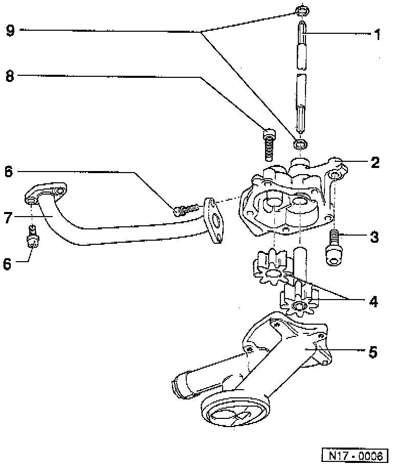
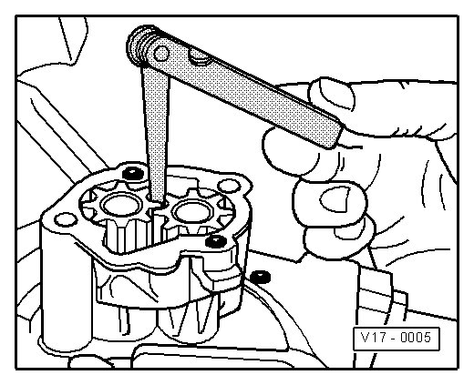
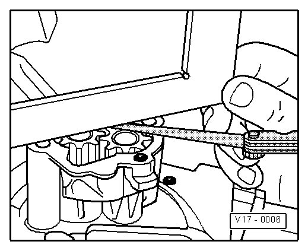

Oil Pump: Service and Repair
Oil Pump, Assembly Overview

1 Input shaft
• For oil pump drive
2 Oil pump housing
3 23 Nm
4 Gears
• Checking backlash --> [ Checking Oil Pump Backlash ]
• Checking axial play --> [ Checking Oil Pump Axial Clearance ]
5 Oil pump cover with pressure relief valve
• Opening pressure 5.3 to 5.7 bar pressure
• Clean strainer if soiled
6 8 Nm
• Replace
7 Oil pressure line
• To remove and install the oil pressure line, the oil pump must be removed
• Fasten with new "microencapsulated" bolts.
• To install, first tighten all bolts by hand. Tighten the oil pressure pipe at the cylinder block and then at the oil pump --> [ (Item 6) 8 Nm ]. Tighten the oil pump bolts last --> [ (Item 3) 23 Nm ].
8 8 Nm
9 Seal
• Replace if damaged
Checking Oil Pump Backlash

Special tools, testers and auxiliary items required
• Feeler gauge
Wear limit: 0.20 mm
Checking Oil Pump Axial Clearance

Special tools, testers and auxiliary items required
• Straight edge
• Feeler gauge
Wear limit: 0.10 mm